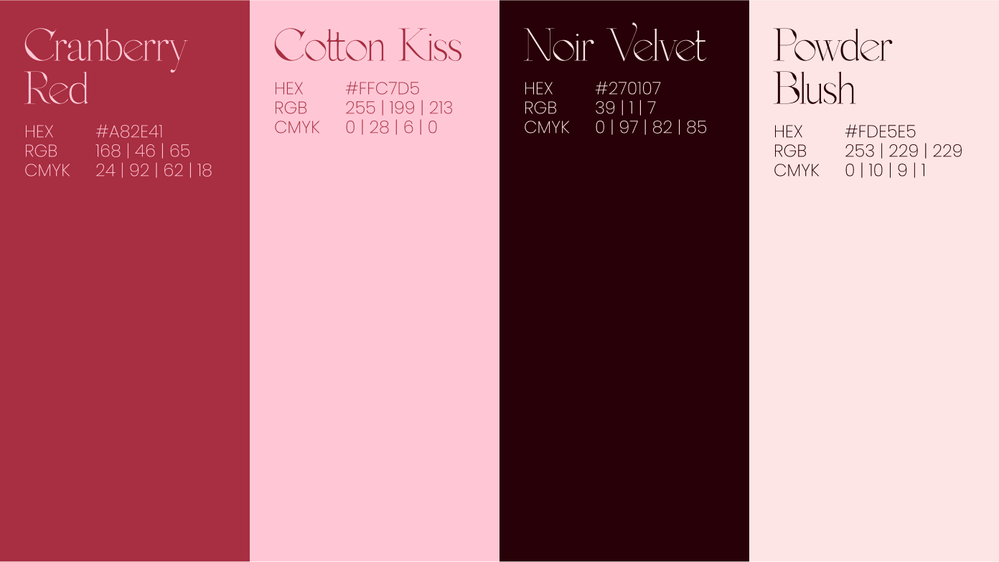
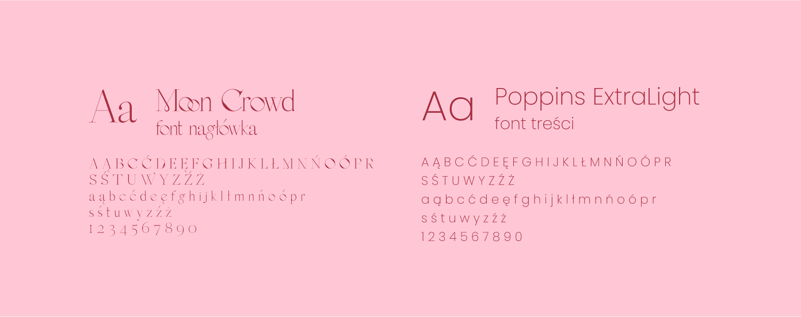
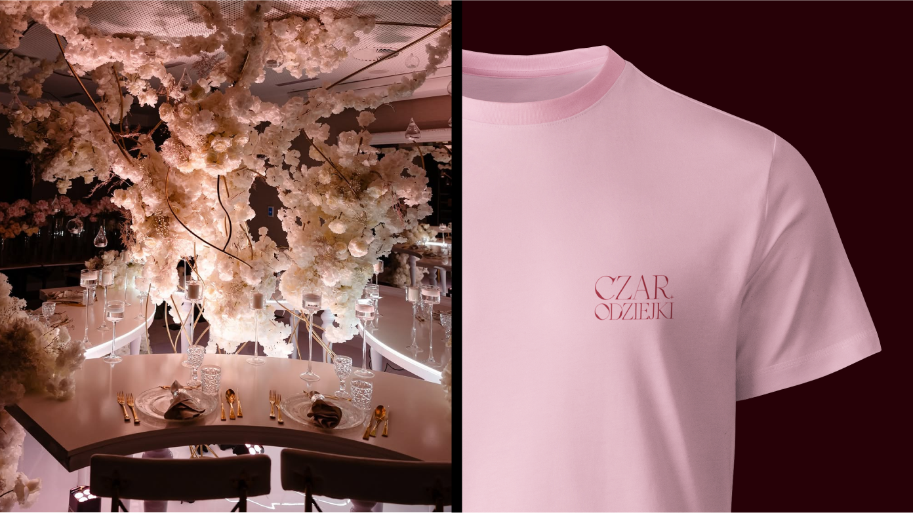
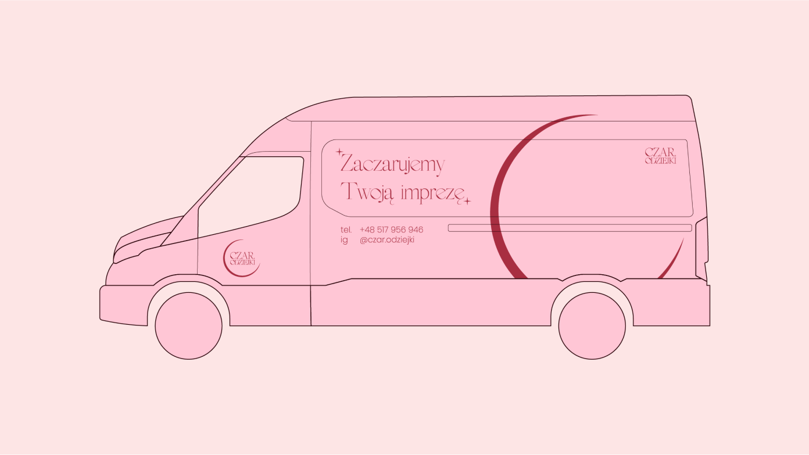
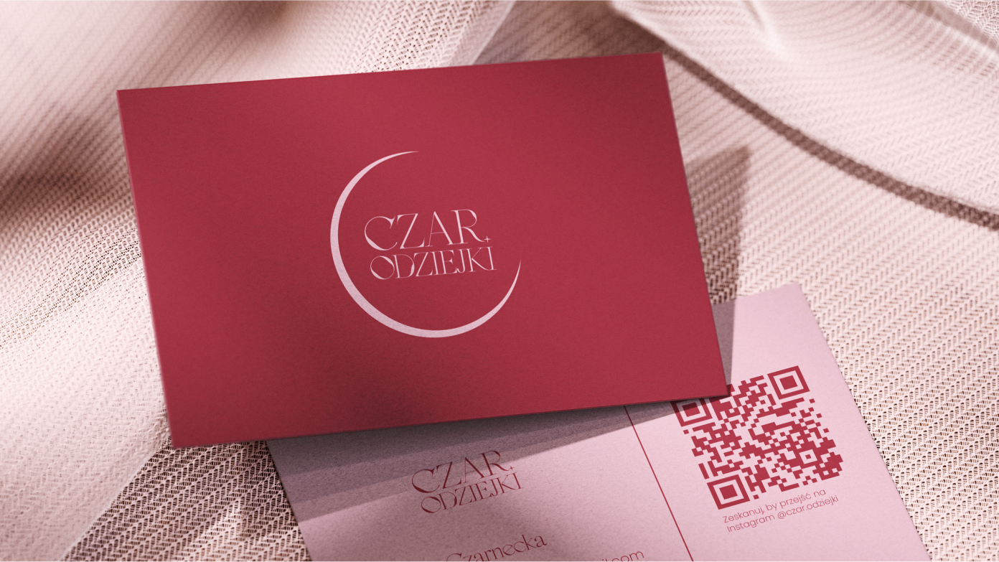
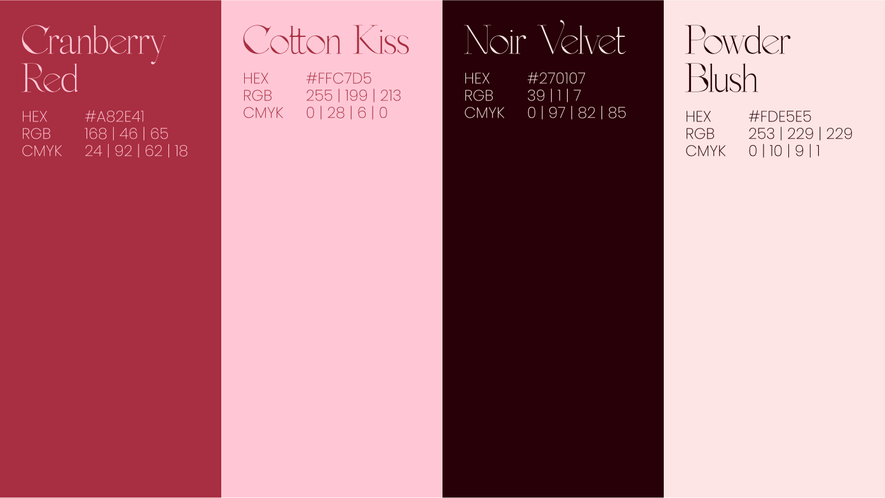
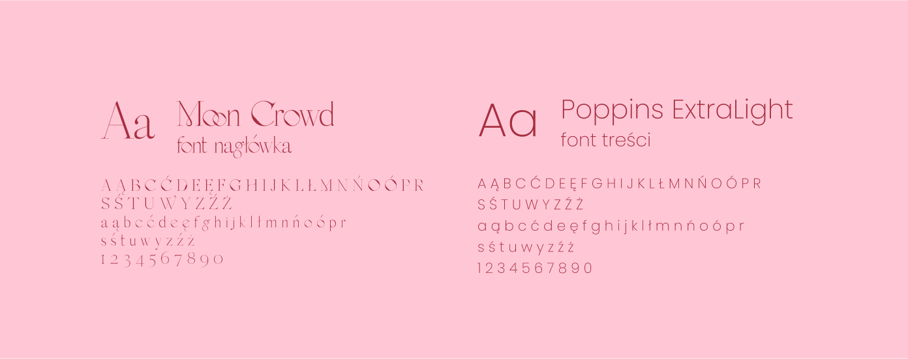
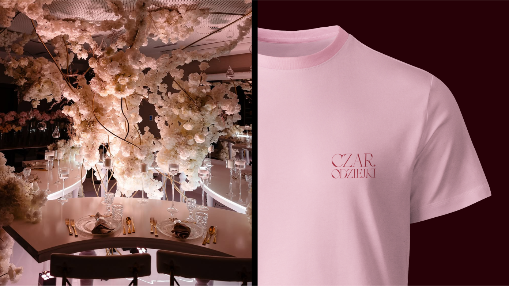
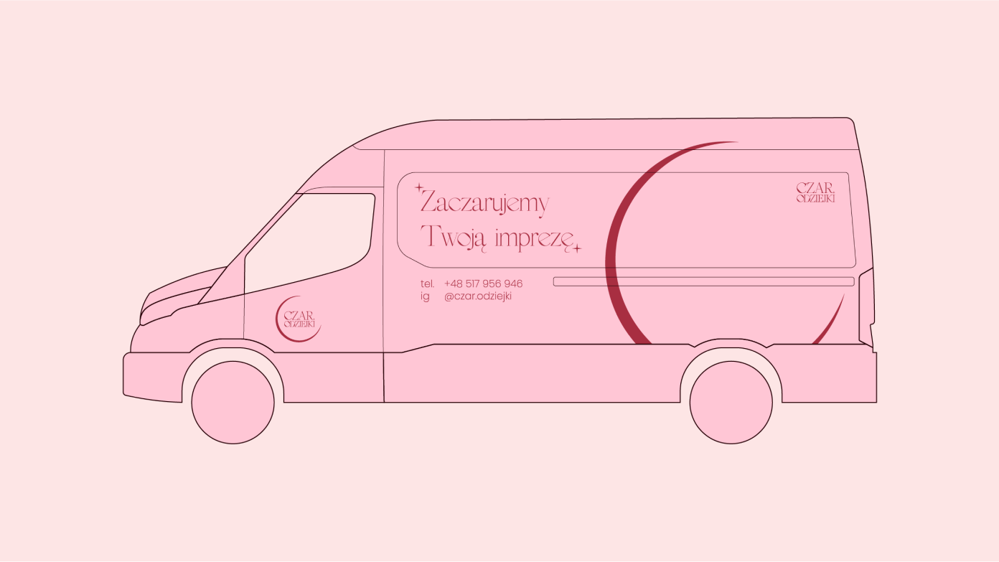
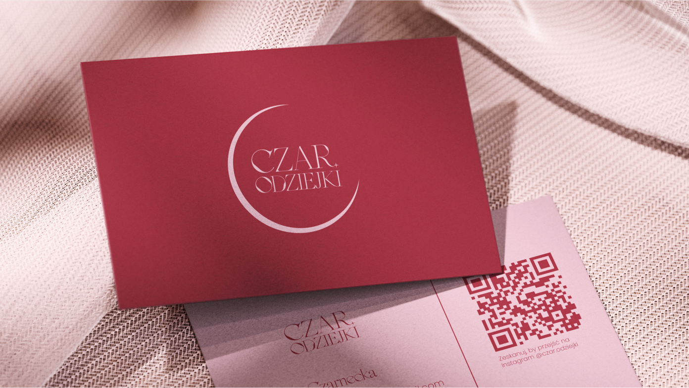

Branża
Eventowa
Zakres prac
Logo, Identyfikacja wizualna, Research
Klient
Czar.odziejki
Współpraca z firmą Czar.odziejki dotyczyła redesignu jej ówczesnego logo oraz stworzenia kompletnej, spójnej identyfikacji wizualnej dla prężnie rozwijającej się marki specjalizującej się w dekoracjach sal na wydarzenia prywatne i biznesowe — od komunii i wesel, po eventy branżowe. Głównym celem było zbudowanie wizerunku, który połączy lekkość i nutę magii z profesjonalizmem i estetyką na wysokim poziomie.
Powstał system wizualny, który zapewnia marce spójność i fundamenty do dalszego rozwoju wizerunku. Jednocześnie daje jej narzędzia do skutecznej komunikacji z grupą odbiorców, zarówno indywidualnych, jak i biznesowych.
 








